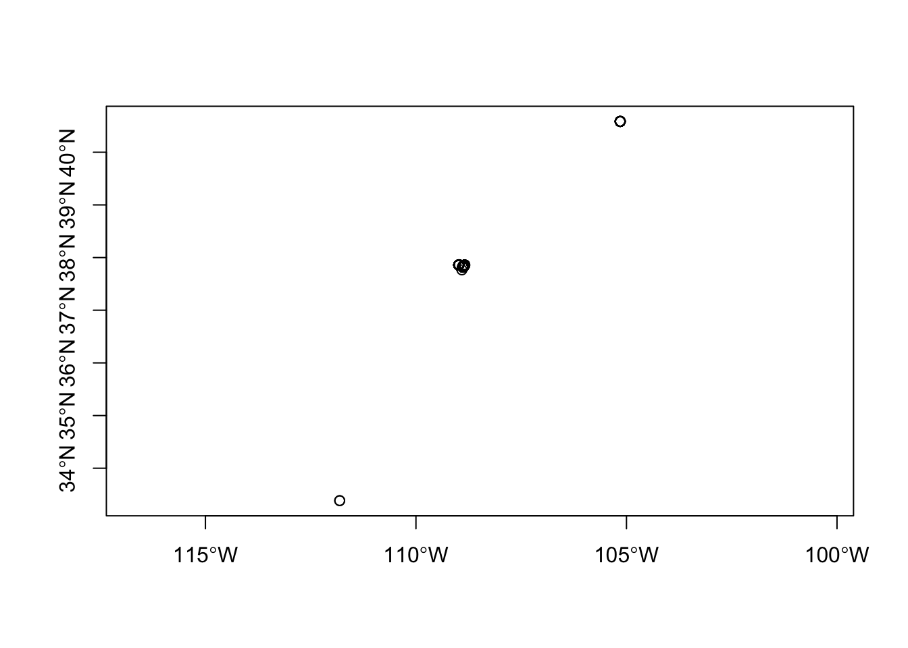
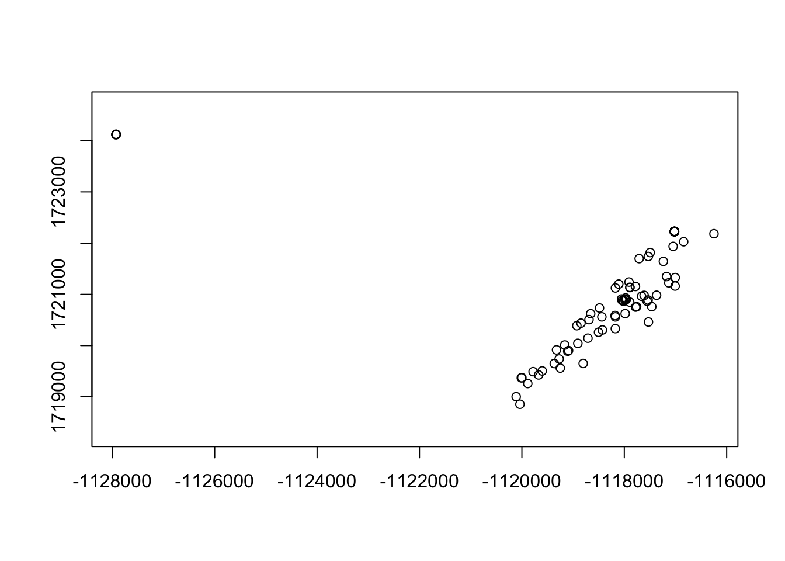
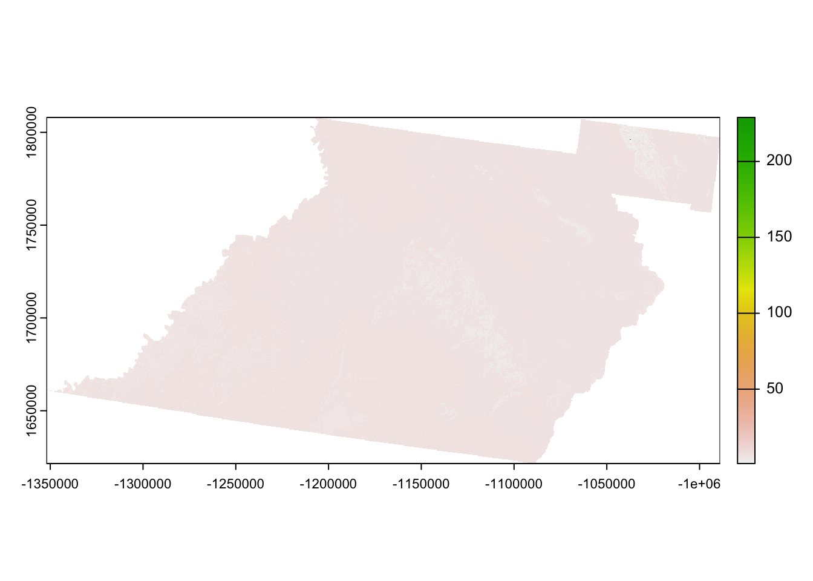
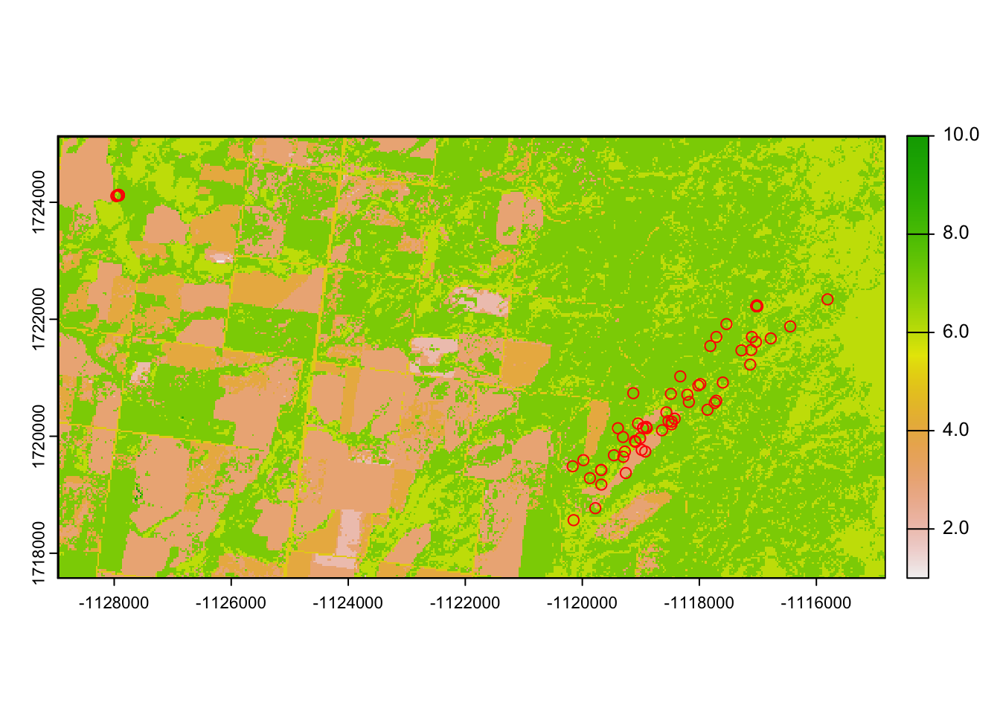
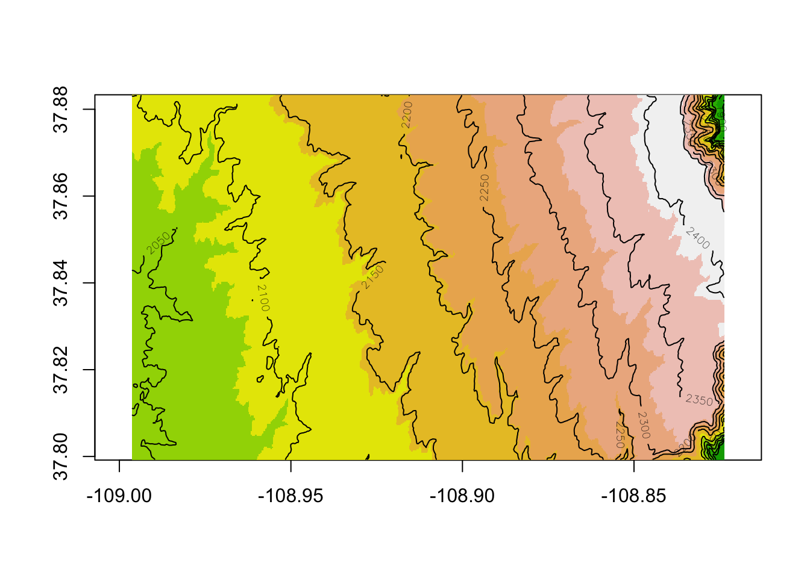

33 Preparing Additional Covariates
We may often be interested in assessing various covariates that may influence resource selection of our study animals. If we have a priori knowledge that elevation or slope may influence selection for or use of portions of the landscape then we need to create these layers for analysis. While this may not seem like a very complicated process because it is routinely done in ArcMap, those same available layers can be used and manipulated in R as in Chapter 1. We can then create slope, aspect, hillshade or other variables within R using concepts in earlier chapters and extract those covariates for use in modeling all within the R environment.
1. Open the script MD_DataPrep.Rmd” and run code directly from the script
2. First we need to load the packages needed for the exercise
3. Now let’s have a separate section of code to include projection information we will use throughout the exercise. In previous versions, these lines of code were within each block of code
4. Load the mule deer dataset we used in the previous exercise
muleys <-read.csv("data/muleysexample.csv", header=T)
#Remove outlier locations
coords <- st_as_sf(muleys, coords = c("Long", "Lat"), crs = ll.crs)
plot(st_geometry(coords),axes=T)
deer.spdf <- st_crop(coords, xmin=-107.0,xmax=-110.5,ymin=37.8,ymax=39.0)#Visually identified based on previous plotWarning: attribute variables are assumed to be spatially constant throughout
all geometriesplot(st_geometry(deer.spdf),axes=T)
- Only use code in this section for example exercise so fewer locations are used.
deer.spdf <- deer.spdf[sample(nrow(deer.spdf),100),]
#Project deer.spdf to Albers as in previous exercise
deer.albers <-st_transform(deer.spdf, crs=albers.crs)
plot(st_geometry(deer.albers),axes=T)
6. If we get some NA errors because our grid does not encompass our panther locations then we can expand the grid size extending beyond our locations using methods in an earlier exercise.
# Create vectors of the x and y points using boundary box created around deer locations
bb1 <- st_bbox(deer.albers)
increment = 1000
minx=(min(bb1$xmin)-(increment))
maxx=(max(bb1$xmax)+(increment))
miny=(min(bb1$ymin)-(increment))
maxy=(max(bb1$ymax)+(increment))
my_bbox = st_bbox(c(xmin = minx, xmax = maxx,
ymin = miny, ymax = maxy),
crs = 5070)
AlbersSP <- st_as_sfc(my_bbox)7. Now it is time to import some raster layers of the covariates we are interested in for our analysis. Start with raster of vegetation from the 2012 NRCS Crop data that is a nice dataset that is crop specific for each year. Crop data can be found at the NRCS webpage Cropland Data Layer that can be accessed for each county of each state.
crops <-rast("data/crop12clip.tif")
# Reclassify crops raster from above into 9 groups
# all values between 0 and 20 equal 1, etc.
m <- c(-Inf,0,NA,2, 7, 2, 20, 60, 3, 60, 70, 4, 110, 132, 5, 133, 150, 6, 151, 172, 7,
180, 183, 8, 189, 191, 9,192,205,10)
rclmat <- matrix(m, ncol=3, byrow=TRUE)
rc <- classify(crops, rclmat)
plot(rc)
#Crop using AlbersSP polygon created earlier to reduce size of raster (if needed).
bbclip <- crop(rc, AlbersSP)
as.matrix(table(values(bbclip)))#Identifies the number of cells in each category [,1]
1 5
2 1052
3 21750
4 9733
5 2133
6 16290
7 58264
9 9
10 14plot(bbclip)
plot(st_geometry(deer.albers), add=T,col="red")
plot(st_geometry(AlbersSP), add=T,lwd=2)
8. We also want to look at elevation and covariates related to elevation (e.g., slope, aspect). These can be created directly in R using the terrain function in the raster package. We will use the FedData package to get Digital Elevation Models for the large study area
DEM <- get_ned(template=AlbersSP, label = 'COdem',force.redo = T)
image(DEM, col=terrain.colors(10))
contour(DEM, add=TRUE)
slope <- terrain(DEM,"slope", neighbor=8, unit='degrees')
aspect = terrain(DEM,"aspect", neighbor=8, unit='degrees')
elevation <- project(DEM, bbclip, mask=TRUE)
slope <- project(slope, bbclip, mask=TRUE)
aspect <- project(aspect, bbclip, mask=TRUE)
nlcdclip <- crop(bbclip, slope)
demclip <- crop(elevation, slope)
sloclip <- crop(slope, slope)
aspclip <- crop(aspect, slope)9. Cast over all 4 layers to a Spatial Grid Data Frame to permit combining into one layer.
nlcd <- as.data.frame(nlcdclip, xy=TRUE)
elev <- as.data.frame(demclip, xy=TRUE)
slo <- as.data.frame(sloclip, xy=TRUE)
asp <- as.data.frame(aspclip, xy=TRUE)
#Now check to be sure the number of cells in each layer are the same before proceeding the
#next step of combining layers.
str(nlcd)'data.frame': 109250 obs. of 3 variables:
$ x : num -1128960 -1128930 -1128900 -1128870 -1128840 ...
$ y : num 1725360 1725360 1725360 1725360 1725360 ...
$ CLASS_NAME: num 7 7 7 7 5 7 7 7 6 7 ...str(elev)'data.frame': 109250 obs. of 3 variables:
$ x : num -1128960 -1128930 -1128900 -1128870 -1128840 ...
$ y : num 1725360 1725360 1725360 1725360 1725360 ...
$ USGS_1_n38w109: num 2075 2075 2077 2080 2082 ...str(slo)'data.frame': 109250 obs. of 3 variables:
$ x : num -1128960 -1128930 -1128900 -1128870 -1128840 ...
$ y : num 1725360 1725360 1725360 1725360 1725360 ...
$ slope: num 2.29 2.9 4.54 5.08 4.7 ...str(asp)'data.frame': 109250 obs. of 3 variables:
$ x : num -1128960 -1128930 -1128900 -1128870 -1128840 ...
$ y : num 1725360 1725360 1725360 1725360 1725360 ...
$ aspect: num 178 213 237 234 222 ...- To combine all data frames, we need to match xys so we have the same number of rows of data in each raster. We will use the code below to do this.
for (z in length(asp)){
asp$xy <- paste(asp$x, asp$y, sep="")
}
for (z in length(slo)){
slo$xy <- paste(slo$x, slo$y, sep="")
}
for (z in length(elev)){
elev$xy <- paste(elev$x, elev$y, sep="")
}
for (z in length(nlcd)){
nlcd$xy <- paste(nlcd$x, nlcd$y, sep="")
}
elev <- elev[elev$xy %in% slo$xy,]
asp <- asp[asp$xy %in% asp$xy,]
nlcd <- nlcd[nlcd$xy %in% asp$xy,]11. Combine elevation, slope, and aspect into one layer.
x y CLASS_NAME xy x y USGS_1_n38w109
1 -1128960 1725360 7 -11289601725360 -1128960 1725360 2074.788
2 -1128930 1725360 7 -11289301725360 -1128930 1725360 2074.990
3 -1128900 1725360 7 -11289001725360 -1128900 1725360 2076.914
4 -1128870 1725360 7 -11288701725360 -1128870 1725360 2079.564
5 -1128840 1725360 5 -11288401725360 -1128840 1725360 2081.792
6 -1128810 1725360 7 -11288101725360 -1128810 1725360 2083.144
xy x y aspect xy x y
1 -11289601725360 -1128960 1725360 177.7081 -11289601725360 -1128960 1725360
2 -11289301725360 -1128930 1725360 212.5121 -11289301725360 -1128930 1725360
3 -11289001725360 -1128900 1725360 237.0969 -11289001725360 -1128900 1725360
4 -11288701725360 -1128870 1725360 233.5645 -11288701725360 -1128870 1725360
5 -11288401725360 -1128840 1725360 222.2563 -11288401725360 -1128840 1725360
6 -11288101725360 -1128810 1725360 206.8798 -11288101725360 -1128810 1725360
slope xy
1 2.285503 -11289601725360
2 2.902969 -11289301725360
3 4.543044 -11289001725360
4 5.080888 -11288701725360
5 4.701881 -11288401725360
6 4.078935 -11288101725360#Remove xys that are repeated in each layer
layers = layers[c(3,7,11,15,13:14)]
names(layers) = c("nlcd", "elevation", "aspect", "slope","x", "y")
# turn aspect into categorical
aspect_categorical = rep(NA, nrow(layers))
aspect_categorical[layers$aspect < 45 | layers$aspect >= 315] = "N"
aspect_categorical[layers$aspect >= 45 & layers$aspect < 135] = "E"
aspect_categorical[layers$aspect >= 135 & layers$aspect < 225] = "S"
aspect_categorical[layers$aspect >= 225 & layers$aspect < 315] = "W"
table(aspect_categorical)aspect_categorical
E N S W
6527 7899 30876 63948
FALSE
109250 layers$aspect_categorical = aspect_categorical
head(layers) nlcd elevation aspect slope x y aspect_categorical
1 7 2074.788 177.7081 2.285503 -1128960 1725360 S
2 7 2074.990 212.5121 2.902969 -1128930 1725360 S
3 7 2076.914 237.0969 4.543044 -1128900 1725360 W
4 7 2079.564 233.5645 5.080888 -1128870 1725360 W
5 5 2081.792 222.2563 4.701881 -1128840 1725360 S
6 7 2083.144 206.8798 4.078935 -1128810 1725360 S#write.table(layers,"layer1.txt",sep=",",col.names=TRUE, quote=FALSE)
layers2 <- layers #change to layers2 simply to avoid confusion with "layer" term in function
#below#NOTE: Script may contains Demonstration code that will subset number of locations to speed up processing of data during a course exercise. To prevent this, skip this line of code above.
12. We can now begin the task of sampling each of our locations using the code below. This code was created by Ryan Nielsen of West Inc. and was very helpful in this exercise. Alternatively, we could have extracted each covariate layer by layer and included it in our dataset.
# grab values for points created above
grab.values = function(layer, x, y){
# layer is data.frame of spatial layer, with values 'x', 'y', and ____?
# x is a vector
# y is a vector
if(length(x) != length(y)) stop("x and y lengths differ")
z = NULL
for(i in 1:length(x)){
dist = sqrt((layer$x - x[i])^2 + (layer$y-y[i])^2)
#Could adjust this line or add another line to calculate moving window or
#distance to nearest feature
z = rbind(z, layer[dist == min(dist),][1,])
}
return(z)
}
#Grab all values from muleys for each layer in r
test = grab.values(layers2, muleys$X, muleys$Y)
head(test) nlcd elevation aspect slope x y aspect_categorical
437 6 2395.623 280.6483 2.295674 -1115880 1725360 W
4371 6 2395.623 280.6483 2.295674 -1115880 1725360 W
4372 6 2395.623 280.6483 2.295674 -1115880 1725360 W
4373 6 2395.623 280.6483 2.295674 -1115880 1725360 W
4374 6 2395.623 280.6483 2.295674 -1115880 1725360 W
4375 6 2395.623 280.6483 2.295674 -1115880 1725360 W##NOTE that all values are the same but this is not correct.
##What is the problem here and how do we fix it?
#Need to grab Albers XY not UTM as in muleys above
muleys <- as.data.frame(sf::st_coordinates(deer.albers))
# grab all values for used and available points based on combined layer data set
# can take 5+ minutes
used = grab.values(layers2, muleys$X, muleys$Y)
# used$x = muleys$X
# used$y = muleys$Y
# used$animal_id = muleys$id
used$use = 1
head(used) nlcd elevation aspect slope x y aspect_categorical use
49782 6 2353.957 263.8254 4.252453 -1116960 1721970 W 1
86836 6 2217.750 312.5775 6.662394 -1119690 1719420 W 1
77667 7 2248.726 241.1956 6.642384 -1119450 1720050 W 1
45847 7 2351.774 216.2095 2.682055 -1117020 1722240 S 1
458471 7 2351.774 216.2095 2.682055 -1117020 1722240 S 1
67683 7 2329.548 264.6193 2.048619 -1117440 1720740 W 113. We also need to get some measure of what is available for our mule deer population (2nd order selection) or for each mule deer (3rd order selection). We really do not understand the need for 2nd order selection unless you are looking at deer across different landscapes but hardly seems necessary for deer occupying similar areas such as our mule deer in southwestern Colorado. Below we will focus on 3rd order selection with used locations for each deer being compared to available locations randomly determined within each deer’s MCP.
#Create MCP for all locations for each deer by ID (3nd order selection).
#3 lines below needed for mcp function to work
muleys2 <- as.data.frame(deer.albers)
deer.spdf <- SpatialPointsDataFrame(muleys,muleys2)
cp = mcp(deer.spdf[,2],percent=100)
as.data.frame(cp)
#Determine the habitat available using all code below
#First create random sample of points in each polygon
random <- sapply(slot(cp, 'polygons'), function(i) spsample(i, n=50, type='random', offset=c(0,0)))
plot(cp) ; points(random[[2]], col='red', pch=3, cex=.5)#The number in double brackets changes polygons stack into a single SpatialPoints object
random.merged <- do.call('rbind', random)
#Extract the original IDs
ids <- sapply(slot(cp, 'polygons'), function(i) slot(i, 'ID'))
#Determine the number of ACTUAL sample points generated for each polygon
newpts <- sapply(random, function(i) nrow(i@coords))
newpts #Nice check of how many points generated per polygon
# generate a reconstituted vector of point IDs
pt_id <- rep(ids, newpts)
# promote to SpatialPointsDataFrame
random.final <- SpatialPointsDataFrame(random.merged, data=data.frame(poly_id=pt_id))
# make 'random.final' a data.frame
random.df = as.data.frame(random.final)
names(random.df) = c("ID","x","y")
# can take 5+ minutes
available = grab.values(layers2, random.df$x, random.df$y)
# available$x = random.df$x
# available$y = random.df$y
# available$animal_id = pt_id
available$use = 0
head(available)14. Bind together mule deer locations with covariates extracted (used) and random locations within each polygon by deer ID (available) into a master dataset for modeling (data). The (use) column identifies 1 as (used) and 0 as (available)
data = rbind(available, used)
##A quick check of the data to determine if correct number of records.
#''data.frame': 200 obs. of 9 variables:
#100 locations used +
#100 locations available (2 animals X 50 random locations)
#= 100 #Confirmed in code below
# nlcd : num 7 6 7 7 7 7 7 7 7 6 ...
# elevation : int 2058 2058 2068 2068 2070 2072 2076 2062 2071 2071 ...
# aspect : num 105 278 105 80 135 ...
# slope : num 2.72 3.37 4.68 4.11 6.05 ...
# x : num -1127639 -1127610 -1127864 -1127805 -1127862 ...
# y : num 1724257 1724271 1724091 1724218 1724174 ...
# aspect_categorical: chr "E" "W" "E" "E" ...
# animal_id : chr "D12" "D12" "D12" "D12" ...
# use : num 0 0 0 0 0 0 0 0 0 0 ...15. The above code is for 3rd order selection within home range of each deer. We could also look at 3rd order selection within a buffered circle around each mule deer location that is common in Discrete Choice Models. The code is similar except the initial steps of creating buffered polygons and obviously includes a lot more polygons than simply MCPs for each deer. Determining the daily distance moved was done in Chapter 3 but new code is available to estimate for each deer or all deer combined.
settbuff=st_buffer(deer.albers,500) %>% st_as_sfc()
#Determine the habitat available using all code below
#First create random sample of points in each polygon
ranbuff <- st_sample(settbuff,size=c(3,3),exact = T, type="random", by_polygon = TRUE)
#ranbuff <- st_sample(settbuff,size=c(3,3), type="random", by_polygon = TRUE)
plot(st_geometry(settbuff)) ; plot(st_geometry(ranbuff),add=T,col='red', pch=3, cex=.5)
#Now to assign IDs, we needed help (https://github.com/r-spatial/sf/issues/1014) so thank you @edzer!
n = c(1,2,3)
ranbuffwIDs <- st_sf(id = rep(seq_along(n), n), geom = ranbuff)
ranbuff.merged <- do.call('rbind', ranbuffwIDs)
st_sf(id= rep(seq_along(ranbuff.merged),ranbuff.merged), geom = randbuff)
points_sf_joined <-
st_join(ranbuff, settbuff) %>% # spatial join to get intersection of points and poly
filter(!is.na(num)) # 'rgn_name'num' just one col from the polygon data that I chose to filter on, could use any. The idea is to get only the points that fall in the polygon
buff_ids <- sf::st_join(settbuff,ranbuff.merged)
#Extract the original IDs
buff_ids <- rownames(ranbuff.merged) #sapply(slot(settbuff, 'polygons'), function(i) slot(i, 'ID'))
buff_ids <- paste(settbuff$id, buff_ids, sep="_")
#Determine the number of ACTUAL sample points generated for each polygon
buffpts <- sapply(ranbuff, function(i) nrow(i@coords))
buffpts[1:20] #Nice check of how many points generated per polygon
# generate a reconstituted vector of point IDs
buffpt_id <- rep(buff_ids, buffpts)
# promote to SpatialPointsDataFrame
buff.final <- SpatialPointsDataFrame(ranbuff.merged, data=data.frame(poly_id=buffpt_id))
#Plot buff.final on buffered circles
plot(settbuff) ; points(buff.final, col="red",pch=3, cex=0.5)
# make 'buff.final' a data.frame
buffer.df = as.data.frame(buff.final)
names(buffer.df) = c("ID","x", "y")
head(buffer.df)
str(random.df)
str(buffer.df)
# can take 5+ minutes
buff_avail = grab.values(layers2, buffer.df$x, buffer.df$y)
buff_avail$x = buffer.df$x
buff_avail$y = buffer.df$y
buff_avail$animal_id = buffpt_id
buff_avail$use = 0
data2 = rbind(buff_avail, used)
#Save workspace so all analysis are available
save.image("RSF_dataprep.RData")
#Before closing, let's save the "used" and available data set to use in the next exercise
write.table(used, "MD_used.txt")
write.table(available, "MD_avail.txt")16. We are going to focus the remainder of this chapter on Selection Ratios and Resource Selection Functions (RSFs) because Selection Ratios identify a general use of habitat given what is available that can be further explored and studied through use of RSFs. Resource Selection Functions are spatially-explicit models that predict the (relative) probability of use by an animal at a given area/location during a given time, based on the environmental conditions that influence or account for selection. There are numerous types of RSFs that can be performed based on the availability of data collected during the study and there are volumes of literature devoted to the topic of resource selection and sampling designs for radiotelemetry studies (Manly et al. 2002, Cooper and Millspaugh 2001, Erickson et al. 2001, Leban et al. 2001).